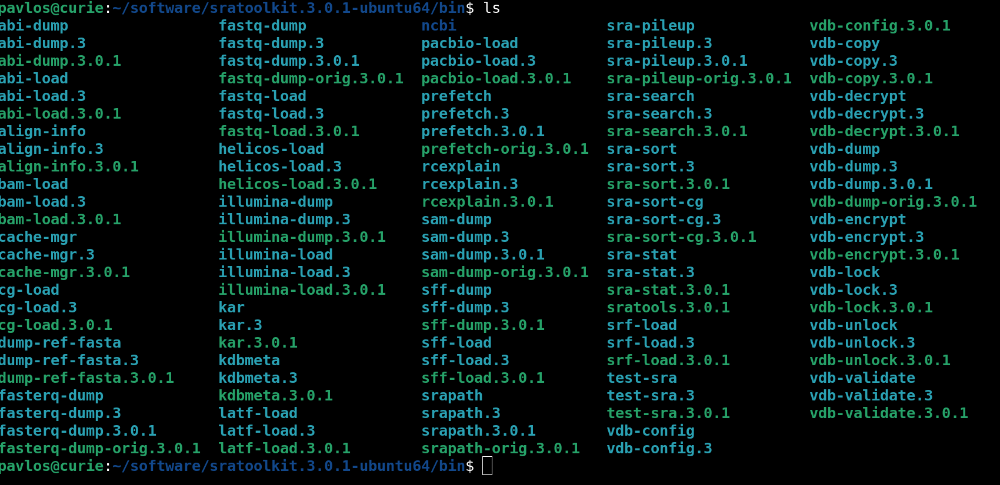

1 NGS tutorial: from SRA to VCF#
The NGS tutorial will guide you from raw SRA files to VCF variants. We start with the SRA data from NCBI. Then, we convert them to fastq using the sra-toolkit and then we apply samtools and bcftools to obtain variants. We will use A. thaliana data to demonstrate the pipeline
1.1 Download some data#
Perhaps, this is the most difficult part of the whole pipeline i.e., where to find data. Usually, we download data from the NCBI, ENA or other resources, such as the 1000Genomes project or the Arabidopsis project or other web databases.
1.2 Overview#
The following steps will be followed:
Download and install the sra-toolkit.
Get some data from NCBI (it is supposed that you already know the ID of the runs)
Download the SRA data
Convert the data to fastq format
Mapping: Run bwa mem to perform mapping
SAMTOOLS: Samtools will do some additional operations, such a sorting, fixing the mate flags
Calling: Use bcftools to call the genotypes and produce the GVCF files.
Merge the files: Merge all individual files to a single file containing the information from all sequencded individuals.
Final SNP calling and VCF production
The final product will be a single VCF file that contains just the SNPs. Here, there is a specific definition of what a SNP is: A SNP is a position that at least one individual is different from the reference. This means, that a SNP might actually be monomorphic if all individuals are homozygous for the state that is not present in the reference genome.
1.3 Download and install the sra-toolkit#

Download and install sra-toolkit. Even if you can build the code from the source, luckily, there is a link to pre-compiled software available for you system. The link is here PRECOMPILED SRA-TOOLKIT. For my system, I used the Ubuntu Linux 64bit architecture, even though I’m running a Debian system. It works fine.
After you download and unzip the code, you can navigate inside the sratoolkit.3.0.1-ubuntu64 folder and then inside the bin directory. There, you can see the following files:
It is comfortable to modify your PATH variable, to include this specific directory in the PATH variable. * Open the ~/.bashrc file (e.g.
emacs -nw ~/.bashrcorvim ~/.bashrcornano ~/.bashrc) and go to the end of the file. Then type something like:PATH=/home/pavlos/software/sratoolkit.3.0.1-ubuntu64/bin/:$PATH export PATHIn this case, the
/home/pavlos/software/sratoolkit.3.0.1-ubuntu64/bin/is the directory that I want to add in the PATH. Please MODIFY it according to your own path. Then, save and close the file and type in the terminal:source ~/.bashrc ## or . ~/.bashrcNote
Do NOT forget the $PATH part at the end of the PATH=…. Otherwise, you will destroy the PATH variable of the system. Thus, you actually append to the PATH variable the directory that you need.
{kind=link}
1.4 Download some data using the sra-toolkit#
Now, that all the tools from the sra-toolkit software package, we are ready to download some data from the SRA database of the NCBI. The SRA file format contains all the information (sequence and base qualities) but they cannot be used directly for the downstream analyses. Thus, we will download them and then we will convert them to FASTQ files.
Finding the proper SRA files isn’t a very trivial task, since there are tones of data out there… but they are not so well organized. For example, at least, for me it’s not trivial at all how to get all SRA files for humans that sampled in Europe. Anyway, in this tutorial we will cheat a bit and we will give you just 3 SRA IDs for 3 Arabidopsis plants. If we have a list of SRA files, then it’s easy to get the data. The difficult task is to find the SRA IDs we need.
The data we will download have the following SRA IDs:
SRR1945435
SRR1945436
SRR1945437
To get a file, we will use the prefetch command from the sra-toolkit. Thus just type:
prefetch SRR1945435
This will just download the SRR1945435 file. If you have saved all the IDs in a file called e.g., “accesions.txt”, you can type
prefetch --option-file accesions.txt
This will take some time. The SRA files are quite large, so please be patient. Also, you need to have sufficient amount of avaialbe hard disk space.
1.5 Convert the data from SRA to fastq#
We will use the fasterq-dump to convert the downloaded SRA files to the fastq format. Here we assume paired-end format, so two files will be generated.
Note
If our reads are paired-end, then two fastq files will be created. The first will look like *_1.fastq.gz and the second *_2.fastq.gz.
fasterq-dump SRR1945437.sra
Note
The sra files have been stored within folders entitled as their ID. Thus a more efficient way to convert all the SRA to fastq is something like the following command:
for file in `find -iname '*.sra' | xargs ls` ## The "| xargs ls" part can be removed. I just want to have the files alphabetically ordered.
do
echo $file;
fasterq-dump $file;
done
The fastq files will be stored in the folder that we run the command.
1.6 The Quality Control and the mapping process#
The quality control (QC) is an important part of the analysis since it can save you from the analysis of low-quality data. We will go through that in another tutorial. For now, let’s suppose that the data is of good quality and proceed with the mapping process.
1.7 Mapping the fastq reads on a reference genome#
Now, we have obtained the fastq files (from the raw SRA files). To proceed with the mapping, we need a reference genome to map the reads (fastq) to the reference.
First, however, let’s have a look on the fastq files. I will use the command:
pavlos@curie:~/teaching/Linux_2022/lecture10$ head -8 SRR1945435_1.fastq
This will give the following outcome:
@SRR1945435.1 HISEQ-02:159:C0E1JACXX:4:1101:1637:1062 length=100
GATGTCATGTGTATGATTGAGTATAAGAACTTANACCGCAACCCGATCTTAAAAGCCTAAGTAGTGTTTCCTTGTTAGAAGACACAAAGCGNNNNNNNNN
+SRR1945435.1 HISEQ-02:159:C0E1JACXX:4:1101:1637:1062 length=100
B@@FFFDFFDFFHIIIJJJJJIIIHIJJIIJII#2?HGGDIJGIIFHIGGHGJIJIJI>GGHIIGHHHHHEDFFCCBEECEAC9?;?#############
@SRR1945435.2 HISEQ-02:159:C0E1JACXX:4:1101:1630:1098 length=100
GAACAATAGAATAACTAAATAATGGTTAGCTGANTGAAATGAACTAAAGAAAGTTTATGTAGAATGATTATAAATTGCTAAAAAAAACTAGNNNNNNNNN
+SRR1945435.2 HISEQ-02:159:C0E1JACXX:4:1101:1630:1098 length=100
@@@FDFDFHHGFHJJJ4CHIIGIJGHGIIJFHH#1:CCGHIIJJJJJJJEHHG8BFGHIGGIIIJGEGGJIAHGI@DGHIFHHEDDBDC@@#########
Here, you can see two entries. Each entry spans four lines. The first line of the record starts with a ‘@’. Then, the name of the read (ID) follows. After the line that starts with a ‘@’, there is the sequence line, i.e., what the sequencer returns. The third line starts with a ‘+’ and then, the next (after the +) line consists of the read quality scores encoded in a weird system in order to represent about 40 different scores with a single character each. You may find more information about the fastq format here: fastq in wikipedia.
These reads (and several millions more) need to be mapped on the reference genome.
So, let’s download the reference genome from the NCBI repository.
1.8 Dowload the reference genome#
We can visit the Genome database of NCBI and search for Arabidopsis thaliana
{kind=link}
We can manually download the genome. However, the new NCBI webpage provides a handy tool to get the genome from the command line. The tools is called datasets and it can be downloaded from the new NCBI webpage: datasets link. Datasets do not need installation. However, the file needs to become executable and be placed within the PATH.
Assuming that we already have datasets installed, we can try the following command to get the reference genome for A. thaliana.
datasets download genome accession GCF_000001735.4 --filename GCF_000001735.4.zip
Note
The genome will be placed within a folder hierarchy ncbi_dataset/data/GCF_000001735.4.
Now, we have the genome and we can proceed with the mapping.
1.8.1 Indexing#
The next command will index the reference genome to speed up mapping later on
bwa index GCF_000001735.4_TAIR10.1_genomic.fna
1.8.2 Mapping#
After indexing, the next step is to perform the mapping itself. Mapping will need as input the (indexed) reference genome as well as both of the _1 and _2 fastq files.
bwa mem -t 10 GCF_000001735.4_TAIR10.1_genomic.fna SRR1945435_1.fastq SRR1945435_2.fastq -o SRR1945435.sam
The previous command will initiate 20 threads to speed up calculations. If reads come in paired files then we need to provide both the _1 and the _2 file (these files will be already in the folder if everything has been correctly downloaded). Of course, it might be the case that you don’t have paired end files, so you don’t expect to have _1 _2 files (each pair) in your directory.
1.8.3 GVCF generation#
Then, we proceed with the generation of the file (gvcf) containing what we have read in the reference and the sample in each location
SAMPLE: the sample file
REF: The reference file
## The next command fixes some mapping flags of the sam file
samtools fixmate -O bam ${SAMPLE}.sam ${SAMPLE}.bam
samtools sort -o ${SAMPLE}.sort.bam ${SAMPLE}.bam
bcftools mpileup -g 10 -Oz -o ${SAMPLE}.gvcf.gz -f ${REF} ${SAMPLE}.sort.bam
bcftools index ${SAMPLE}.gvcf.gz
1.8.4 Generation of the final VCF file#
Finally, we merge the GVCFs from the different sample files and we create a single VCF file, with just the variants.
bcftools merge -Oz --gvcf REF --merge all -o merged.vcf.gz *.gvcf.gz
bcftools call -mv merged.vcf.gz -o merged.vcf.gz.mv.vcf